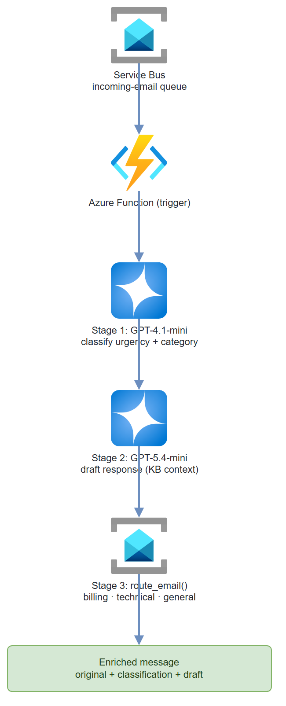

Build it yourself. This project is part of the AI Projects for Cloud Solution Architects portfolio. Full source, code, and the latest updates live in the csa-ai-projects repo on GitHub.
Stop drowning in support email. This guide builds a multi-step agent pipeline that reads from a Service Bus queue, classifies urgency and category, drafts a response, and routes each email to the right team.
What You're Building
An Azure Functions-triggered pipeline with three stages: GPT-4.1-mini classifies each incoming email (urgency: high/medium/low; category: billing/technical/general). GPT-5.4-mini drafts a response using a knowledge base. A FunctionTool routes the email to the correct downstream Service Bus queue based on classification. The whole flow is orchestrated in Python and runs end-to-end in under 10 seconds per email.
Prerequisites
- An Azure AI Services / Foundry resource with
gpt-4.1-miniandgpt-5.4-minideployments:bash az cognitiveservices account deployment create --name <res> --resource-group <rg> \ --deployment-name gpt-4.1-mini --model-name gpt-4.1-mini --model-version 2025-04-14 \ --model-format OpenAI --sku-name Standard --sku-capacity 10 az cognitiveservices account deployment create --name <res> --resource-group <rg> \ --deployment-name gpt-5.4-mini --model-name gpt-5.4-mini --model-version 2026-03-17 \ --model-format OpenAI --sku-name GlobalStandard --sku-capacity 10 - An Azure Service Bus namespace (Standard) with four queues:
incoming-email,billing-team,technical-team,general-team(created in Step 1). - Azure CLI logged in with Cognitive Services OpenAI Contributor on the resource and Azure Service Bus Data Owner on the namespace. This demo uses Entra ID auth, not SAS connection strings — many enterprise tenants disable local/SAS auth (
disableLocalAuth=true) by policy, which makes connection-string auth fail. AZURE_OPENAI_ENDPOINTandSERVICE_BUS_NAMESPACE(the<namespace>.servicebus.windows.nethost) set in.env.- Python 3.11+
pip install "openai>=1.30.0" azure-identity azure-servicebus websocket-client azure-functions python-dotenv
Why
websocket-client? Many corporate networks block the default AMQP port (5671). The Service Bus client below uses AMQP-over-WebSockets (443), which requires this package.
Architecture

Step-by-Step Build
Step 1 — Set up Service Bus queues
NAMESPACE="my-email-triage-ns"
RG="my-resource-group"
LOCATION="eastus2"
az servicebus namespace create \
--name $NAMESPACE \
--resource-group $RG \
--location $LOCATION \
--sku Standard
for queue in incoming-email billing-team technical-team general-team; do
az servicebus queue create \
--name $queue \
--namespace-name $NAMESPACE \
--resource-group $RG
done
# Grant yourself data-plane access via Entra ID (SAS keys are often disabled by policy)
az role assignment create \
--assignee $(az ad signed-in-user show --query id -o tsv) \
--role "Azure Service Bus Data Owner" \
--scope $(az servicebus namespace show --name $NAMESPACE --resource-group $RG --query id -o tsv)
# Your SERVICE_BUS_NAMESPACE value is the namespace host:
echo "$NAMESPACE.servicebus.windows.net"
Step 2 — Client setup
Both models run through a single AzureOpenAI client (Whisper-style routing isn't needed here, and the Foundry project client adds no value for chat). Service Bus uses the same DefaultAzureCredential — no connection strings.
import os
import json
from dotenv import load_dotenv
from azure.identity import DefaultAzureCredential, get_bearer_token_provider
from openai import AzureOpenAI
from azure.servicebus import ServiceBusClient, ServiceBusMessage, TransportType
load_dotenv()
ENDPOINT = os.environ["AZURE_OPENAI_ENDPOINT"] # https://<resource>.cognitiveservices.azure.com/
SB_NAMESPACE = os.environ["SERVICE_BUS_NAMESPACE"] # <namespace>.servicebus.windows.net
credential = DefaultAzureCredential()
openai = AzureOpenAI(
azure_endpoint=ENDPOINT,
azure_ad_token_provider=get_bearer_token_provider(
credential, "https://cognitiveservices.azure.com/.default"
),
api_version="2025-04-01-preview",
)
# Entra ID auth for Service Bus (no connection strings / SAS keys)
sb_client = ServiceBusClient(
fully_qualified_namespace=SB_NAMESPACE,
credential=credential,
transport_type=TransportType.AmqpOverWebsocket,
)
Step 3 — Stage 1: Classification
CLASSIFICATION_SCHEMA = {
"type": "json_schema",
"json_schema": {
"name": "email_classification",
"strict": True,
"schema": {
"type": "object",
"properties": {
"urgency": {
"type": "string",
"enum": ["high", "medium", "low"]
},
"category": {
"type": "string",
"enum": ["billing", "technical", "general"]
},
"reasoning": {
"type": "string",
"description": "One sentence explaining the classification."
},
"sentiment": {
"type": "string",
"enum": ["frustrated", "neutral", "positive"]
}
},
"required": ["urgency", "category", "reasoning", "sentiment"],
"additionalProperties": False
}
}
}
def classify_email(subject: str, body: str) -> dict:
"""Classify email urgency and category using GPT-4.1-mini."""
response = openai.chat.completions.create(
model="gpt-4.1-mini",
messages=[
{
"role": "system",
"content": (
"You are an email triage specialist. Classify incoming customer emails.\n"
"Urgency: high=system down/data loss/SLA breach, "
"medium=degraded functionality, low=question/general request.\n"
"Category: billing=invoices/payments/pricing, "
"technical=bugs/errors/performance, general=everything else."
)
},
{
"role": "user",
"content": f"Subject: {subject}\n\nBody:\n{body}"
}
],
response_format=CLASSIFICATION_SCHEMA,
temperature=0.0,
max_tokens=300
)
return json.loads(response.choices[0].message.content)
Step 4 — Stage 2: The routing tool
Expose the router to the model as a function tool. We use a standard chat completion with tools=[...] — not the legacy Assistants threads/runs API, which is no longer part of azure-ai-projects. When the model decides where to route, it emits a route_email tool call that we execute, actually sending the enriched message to the target Service Bus queue.
ROUTE_FUNCTION = {
"name": "route_email",
"description": (
"Route the processed email to the appropriate team queue. "
"Call this after generating the draft response."
),
"parameters": {
"type": "object",
"properties": {
"target_queue": {
"type": "string",
"enum": ["billing-team", "technical-team", "general-team"],
"description": "The Service Bus queue to send this email to."
},
"priority": {
"type": "string",
"enum": ["high", "medium", "low"],
"description": "Urgency level for queue prioritization."
},
"assignee_hint": {
"type": "string",
"description": "Optional: suggested team member based on issue type."
}
},
"required": ["target_queue", "priority"]
}
}
def route_email(target_queue: str, priority: str,
assignee_hint: str = "", payload: dict | None = None) -> str:
"""Send the enriched message to the target Service Bus queue and return a receipt."""
if payload is not None:
with sb_client.get_queue_sender(target_queue) as sender:
sender.send_messages(ServiceBusMessage(json.dumps(payload)))
return json.dumps({
"status": "queued",
"queue": target_queue,
"priority": priority,
"assignee_hint": assignee_hint
})
Step 5 — Define the knowledge base and triage prompt
No persistent agent registration is needed — the model, the tool, and the prompt are all it takes.
TRIAGE_TOOLS = [{"type": "function", "function": ROUTE_FUNCTION}]
KNOWLEDGE_BASE = """
Common responses:
- Billing issues: "Our billing team reviews invoices within 2 business days. For urgent
billing disputes, please reference your invoice number."
- Technical outages: "Our SRE team is notified immediately for P1 issues.
Expected response time is 30 minutes."
- Password resets: "Use the self-service portal at https://aka.ms/resetpw"
- General inquiries: "Our support team responds within 1 business day."
"""
TRIAGE_SYSTEM = (
"You are a customer support triage agent. Given an email and its classification, "
"draft a professional, empathetic response (3-4 sentences max). "
"Then call route_email() to route to the correct team.\n\n"
f"Knowledge base:\n{KNOWLEDGE_BASE}"
)
Step 6 — Full processing pipeline
Classify, then run one chat completion with the routing tool. If the model emits a route_email call, execute it (sending to Service Bus) and feed the result back so the model can finalize its draft — the standard tool-calling loop.
def process_email(email_id: str, subject: str, body: str, sender: str) -> dict:
"""Full pipeline: classify → draft → route."""
# Stage 1: classify
classification = classify_email(subject, body)
print(f" Classified: {classification['category']} / {classification['urgency']}")
# Stage 2 & 3: draft + route via a tool-calling chat completion
messages = [
{"role": "system", "content": TRIAGE_SYSTEM},
{"role": "user", "content": (
f"From: {sender}\nSubject: {subject}\nBody:\n{body}\n\n"
f"Classification: {json.dumps(classification)}\n\n"
"Draft a response and route this email to the correct team."
)},
]
resp = openai.chat.completions.create(
model="gpt-5.4-mini",
messages=messages,
tools=TRIAGE_TOOLS,
tool_choice="auto",
)
msg = resp.choices[0].message
draft = msg.content or ""
routing = {}
if msg.tool_calls:
messages.append(msg)
for call in msg.tool_calls:
if call.function.name == "route_email":
args = json.loads(call.function.arguments)
enriched = {
"email_id": email_id, "from": sender, "subject": subject,
"classification": classification, "routing": args,
}
routing = json.loads(route_email(**args, payload=enriched))
messages.append({
"role": "tool", "tool_call_id": call.id,
"content": json.dumps(routing),
})
# Follow-up call so the model can finalize the draft after routing
follow = openai.chat.completions.create(
model="gpt-5.4-mini", messages=messages, tools=TRIAGE_TOOLS,
)
draft = follow.choices[0].message.content or draft
return {
"email_id": email_id,
"classification": classification,
"draft_response": draft,
"routing": routing,
}
Step 7 — Azure Function trigger
# function_app.py
import azure.functions as func
import json
import logging
app = func.FunctionApp()
@app.service_bus_queue_trigger(
arg_name="msg",
queue_name="incoming-email",
connection="ServiceBusConnection"
)
def triage_email_trigger(msg: func.ServiceBusMessage):
payload = json.loads(msg.get_body().decode())
logging.info(f"Processing email: {payload.get('subject', 'no subject')}")
result = process_email(
email_id=payload.get("id", "unknown"),
subject=payload.get("subject", ""),
body=payload.get("body", ""),
sender=payload.get("from", "unknown")
)
logging.info(f"Processed: {json.dumps(result, indent=2)}")
Identity-based trigger: With SAS disabled, configure the trigger for a managed-identity connection. Set the app setting
ServiceBusConnection__fullyQualifiedNamespace = <namespace>.servicebus.windows.netand grant the Function App's managed identity Azure Service Bus Data Receiver on the namespace — no connection strings.
Test It
Send a test message to the queue:
def send_test_email():
with sb_client:
sender = sb_client.get_queue_sender("incoming-email")
with sender:
test_email = {
"id": "test-001",
"from": "customer@example.com",
"subject": "URGENT: Production system down - cannot process payments",
"body": (
"Our entire payment processing system has been down for 2 hours. "
"We are losing thousands of dollars per minute. "
"This is completely unacceptable. We need help NOW."
)
}
sender.send_messages(ServiceBusMessage(json.dumps(test_email)))
print("Test email sent to queue")
send_test_email()
Expected classification output (a payment system outage is a P1 technical incident, so it routes to technical-team):
{
"urgency": "high",
"category": "technical",
"reasoning": "Payment processing system outage causing financial loss — P1 incident.",
"sentiment": "frustrated"
}
Common Mistakes
- Service Bus auth fails with
ServiceBusAuthenticationError. Enterprise tenants often disable SAS keys (disableLocalAuth=true), so connection-string auth is rejected. UseDefaultAzureCredentialwith the Azure Service Bus Data Owner role (as shown), and AMQP-over-WebSockets if port 5671 is blocked. - Tool call never fires. If the model returns a draft but no
route_emailcall, tighten the system prompt ("you MUST call route_email") or force it withtool_choice={"type": "function", "function": {"name": "route_email"}}. Always validate the function name matches exactly betweenROUTE_FUNCTION["name"]and your handler. - Service Bus message ordering. Standard tier doesn't guarantee order. If you need FIFO for high-urgency emails, use Premium tier with sessions.
- Draft responses leaking PII. Add a PII scan step between drafting and routing using Azure AI Language's
RecognizePiiEntitiesbefore sending to downstream teams.
Extend It
- Escalation timer: If a
highurgency email isn't claimed fromtechnical-teamqueue within 15 minutes, trigger a second Azure Function that pages the on-call engineer via PagerDuty API. - Feedback loop: After an agent responds, capture customer satisfaction (CSAT) score. Use it to fine-tune or adjust prompts monthly.
- Multi-language support: Detect language with Azure AI Language, translate to English for processing, translate draft response back to original language before routing.